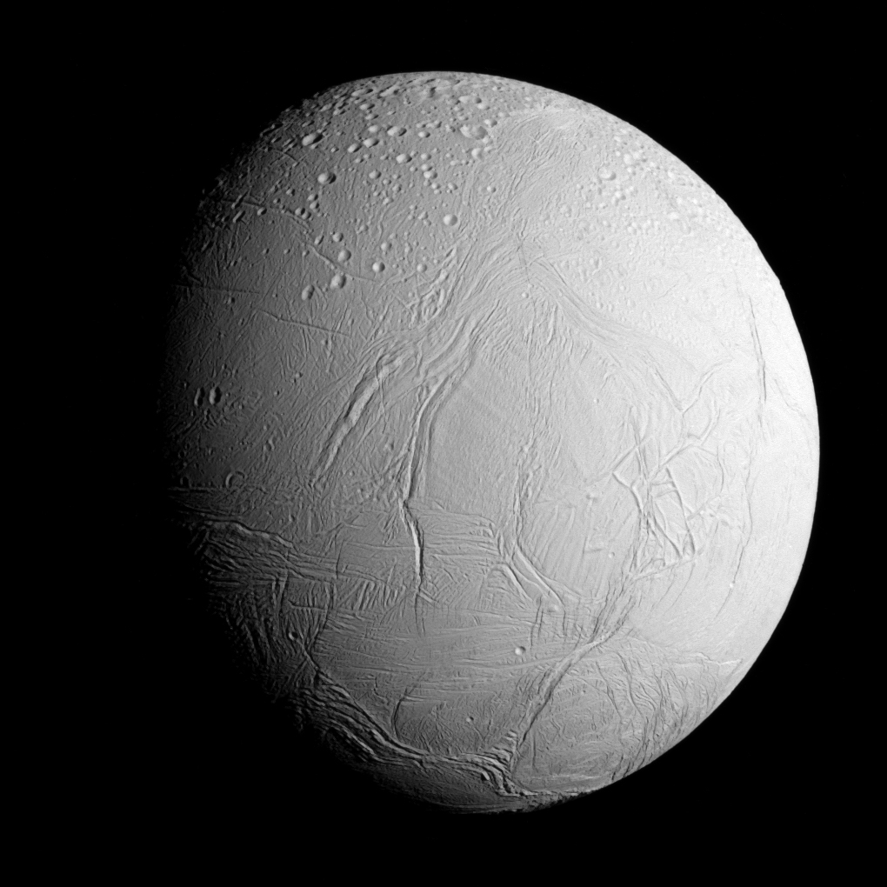

Bulan Es Aktif Saturnus
Enceladus adalah satelit alami terbesar keenam milik planet Saturnus. Meskipun berukuran tergolong kecil, Enceladus merupakan salah satu objek paling memikat di Tata Surya karena permukaannya hampir seluruhnya tertutup es murni yang sangat bersih, menjadikannya objek dengan tingkat reflektivitas (albedo) tertinggi di Tata Surya. Penemuan terpenting oleh wahana Cassini mengungkapkan adanya geyser kriovulkanik di wilayah kutub selatannya. Geyser ini secara aktif menyemburkan uap air, es, garam, dan molekul organik ke luar angkasa, membuktikan keberadaan samudra cair global bawah tanah dengan aktivitas hidrothermal yang berpotensi menyokong kehidupan (keterhunian astrobiologi).